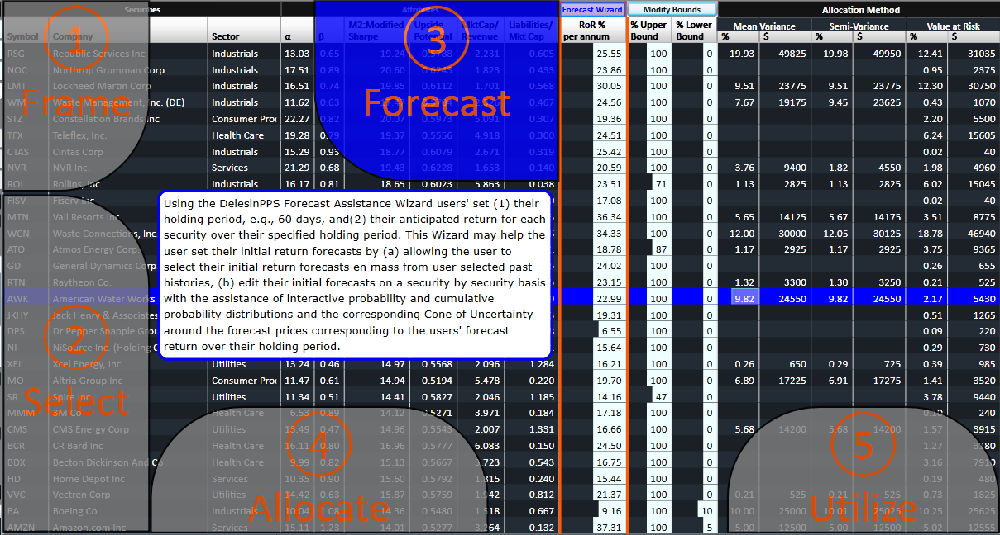

|
<< Click to Display Table of Contents >> Forecast |
  
|
|
<< Click to Display Table of Contents >> Forecast |
|

The most important values are the expected prices for the candidate securities. The user may provide those from outside sources and by using the service’s statistical tools to make projections based on historical performance and supposed changes relative to that.
With the aid of the DelesinPPS Forecast Assistance Wizard users
•set their holding period, e.g., 60 days
•set their anticipated return for each security over their specified holding period by
1.setting the initial return forecasts en mass from the user's selected portion of the reference period first half, second half, total) of the user selected reference period
2.editing their initial forecasts on a security by security basis with the assistance of interactive probability and cumulative probability distributions, estimates of the odds of reversion to their mean or median growth rates and with graphic display of the Cone of Uncertainty around the forecast prices of each security corresponding to the users' forecast return for the specified holding period.